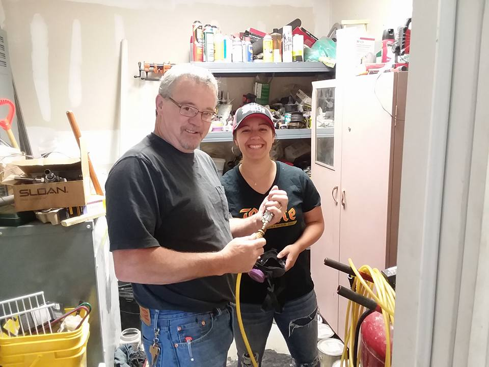

I chose this project because my family owns a brewery back in Butte Montana and I have grown up learning all about the brewing process and all the different types of beer. I think this is a fasinating process and a very popular hobby people have been getting into today and I thought it would be fun to share how beer was made. Brewing beer is a huge passion of mine I have grown over the years to love. There are so many different types and styles of beer out there, it would take me hours if not days to talk about all of them. Every beer is unique in its own way, which I find to be super interesting!
If you would like to find out more on the brewing process and/or just about beer in general you can come visit the Butte Brewing Company in Butte Montana and ask for the brewer or owner and i'm sure they would love to talk to you about it all and could maybe even take you on a tour of the brewing process! If you aren't able to get to Butte, i'm sure your local brewery would love to talk to you as well as i'm sure they love to talk about the beer world just as much as I do. Another way you can learn more about beer if you aren't exactly by a brewery, you can go to https://aslanbrewing.com/thebrewingprocess to check out more!
Here are a few pictures of my brewer and I brewing some beer at the Butte Brewing Company!
